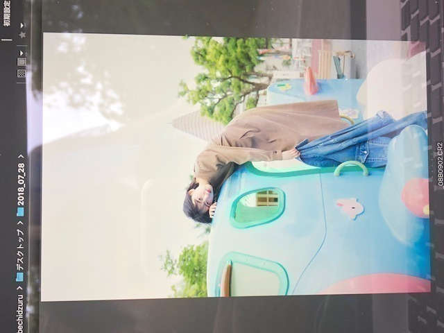

2018/0910Mon遣る瀬無いなって。
こんばんは
もうすっかり秋の風が吹いていますね
炊き込みご飯、さんま、栗
食べたいなぁ
甘党ではないので秋も変わらずご飯系がすきです。
皆さんも
秋の味覚は好きですか？

堀未央奈です
最近はずっと体調を崩していて
たくさんの方に迷惑や心配をおかけしました
健康第一で成り立つこの活動。
改めて体調管理をもっと頑張らないと、と
思いました...
だいぶ良くなり今は元気に生活しています。
気をつけます。
優しい言葉を掛けてくださった方々
ありがとうございました。
秋冬服が好きなのですが
ニットとかふわふわなものとか
あとコートもいろんな種類、
デザインのを
今年は集めたいなぁと思っています。
くすんだクレヨンみたいな
色もかわいいけど
はっきりとした赤、茶も最近は着るんです
秋冬は、
フランスの女の子みたいな
柔らかさの中に個性もあっての服やメイクに
挑戦したいなって思っています！
自分を表現できるもの
例えば私服やメイクもだし
いろんな撮影やブログの書き方など
堀未央奈 をどう表現していこうか
常日頃、模索しながら生きています
だからいろんなものにアンテナを張って
不器用で何もできないからこそ
"挑戦"を繰り返しているのかな...
私探し
一生のテーマで
簡単には見つからなさそうだけど
少しずつ少しずつ
私を好きになっていって
好きになってもらえたら
それ以上の幸せは無いかなって思いました。
頑張りたいです
そういえば
ずっと行きたかったフランスの
マレ地区には車で通っただけで
ちゃんと見れてなくて...
凄く心残りなので
いつかゆっくりヨーロッパ巡りの旅したいです
発売中のarもよろしくお願いします☺︎

気づけば白ばかり
な夏でした
白はずっと好きな色です
何色にも染まらないまっすぐな色
でも、何色かを混ぜたら
綺麗にその色に染まる
一番、柔軟でカメレオン的な色だから
憧れます
今年の秋はどんな色になるかな〜
不安もあるけど
楽しみな気持ちもあるし
私は自分を信じて
頑張りたいなって心から思います
嬉しいことも悔しいこともあるから
頑張れるのかな。
嬉しいことばかりだったらいいのにね。
遣る瀬無いとき、
どうしたらいいかわからなくて
何もかもが嫌になりました。
でも、絶対負けたくないし
逃げたくないって必ず思うんです
守りたいものがあると
実現させたい夢があると
人は
頑張れるんだなって...
そう感じた日でした。

肌寒くなってきたので
皆さん、体調には気をつけてください。
私も気をつけます。
美味しいもの食べに行きたいな〜
ちょっとした秋旅に2期で行ってみたい☺︎

優しいかなさん。
かなさんに会うたび 好き！と愛を叫んで
必ずあしらわれますが
かなさんも私のこと好きだと思う...
かなさん〜
ご飯行きたいです〜

では！
2018/09/10 20:36


コメント(675)
無理せず未央奈のペースで頑張ってね！
俺は未央奈を少しずつ好きになっていって
今では握手行きたいメンバーランキング1位まで来たよ！笑
いつか握手会行きたいな！
体調は大丈夫？仕事も大事だけど身体のほうがもっと大事だからね(>_<)
健康第一
頑張って(⌒‐⌒)
こっひーより(^o^ゞ
体調良くなってて良かった！お大事に！
栗ご飯いっちゃん好き
頑張ってるあなたを見て、いつも頑張ってます
体調は大丈夫ですか。
先週のレコメンのときもいつもの未央奈ちゃんと違うなって
感じていたので、まだ無理してんじゃないのかなぁって
心配になりました。
自分自身で完璧に治ったって思った時に
思い切りはじけちゃってくださいね！！！
それまで温存、温存！！！
2期生で北海道に来てほしいです！！！
大好きな温泉の旅に来て欲しいです！！！
ご要望があればご案内しますんで！（笑）
これからも無理せず、頑張ってくださいね！！！
応援しています！！！
体調に気をつけて秋をたくさん
楽しんでください！笑
自分はさんまが食べたいよ！笑
無理せず頑張って下さい！
応援してます！
またね('∀')/
これからも応援してます！
だいすきです‼︎
それと花奈さんのくだりセンスありすぎｗ
自虐と愛情のバランス最高だし、花奈さんにあしらわれてる様子が目に浮かんで笑っちゃいましたｗ
マジメな話、信頼できる先輩と可愛い後輩の理想的な関係性だと思ってほっこりしました！
そして体調はしっかり整えてね。大丈夫、みんな待ってるから！！
ほな、またな。（笑）
やはり少しずつ
雰囲気が
女性ぽく
なってきた
秋がやってきたと言えるかな、でもまだまだ暑い日が続きます。暑さ寒さも彼岸までと言いますが、ちゃんと涼しくなってくれるのだろうか、心配になります。（笑）
私の最近気になっているのは、乃木坂46の22ndがいつ頃かなという事です。楽しみ！！
ではまた。
私も叶えたい夢があるから今はその夢に向かって頑張ってます！元来ネガティブ思考だった私も、最近はポジティブ思考になってこれてるかも…？もし辛いことがあっても、ファンのみんながついてるからね！ひとりじゃないよ☺︎
明日も未央奈ちゃんにとってよい1日になりますように♪
ほっこりします
ブログ更新ありがとう♡
体調管理しっかりしてても、
病にはかかるもの。人間だもの。
腫れは良くなってきてるかな？
遣る瀬無いこと、わたしもあるよ。
もうどうしようってなっちゃうけど、
未央奈のブログやモバメ、755とか見て
わたしも頑張らなきゃって思うんだ。
いつも元気をたくさんありがとう。
あっ♡赤のコート姿見たいな〜♡
自分も頑張る！
辛くなったら堀ちゃんの言葉を思い出す！
体調良くなってきたみたいでよかった〜！
わたしも白すき！いつもみおなのおしゃれなところ尊敬してるし好みすぎる！また握手会でそういう話いっぱいしたいなー（＾_＾）
秋服が1番好きだし季節も秋がすきだし、お互い素敵な秋になるといいね！これからも応援してます！
健康第一で頑張ってね。
ヨーロッパ行ってみたいな～。
明日もよい一日を！
そして昨日は体調よくない中握手してくれてありがとう！
絶対辛かっただろうに最後までやってくれて感謝しかないです。
久しぶりにみおなの顔見れてお話できて嬉しかった☺︎
わたしも気づけば白ばっかり着てるな〜
みおなのブログわたしは好きだよ！
今回みたいな語ってる感じの読むと、すごく納得して心に響くしがんばろうって思える！
これからも楽しみにしてるね〜
もちろんみおなのことも大好きです♡
未央奈の大丈夫？って言う一つの言葉で1日でも早く
治したいと思いました。未央奈が喉を治すと同時に私も
右手を治したいと思います！次は元気な手で握手会行きまーす。 755きゃんたでやってます。よろしくお願いします。
体調が回復してて安心した… 季節の変わり目で俺も今風邪気味できついけど、負けないように頑張る！
このところ色んなことが重なって、自分を追い詰めて、考えて、きつかったと思うけどあんまり無理し過ぎないでね… 俺も今悩みが多くて大変だけど爆発しないように頑張る！
お互い頑張ろ（´-`）.｡oO（ ほりちゃん大好き♥
少し体調回復されたようで良かったです(^-^)
食欲の秋なので美味しいものたくさん食べて元気つけてくださいね。
確かに嬉しいことばかりだといいですねw
でも懐石料理ってご馳走じゃないですか？それが３日続くと苦しくてしかたがありません(-""-;)
辛いこと悔しいこともあるからこその喜びだと思います。
遣る瀬無いことありますよね。。そういう弱さをポロっと言えて立ち向かえる強さが未央奈ちゃんの強さであり魅力だと思いますよ(^-^)
応援してます！
体調良くなりつつあるようで良かったです！
未央奈ちゃんの幸せな笑顔を個握で楽しみにしてます！
１つ、原動力となるものがあると強いですよね。
何かを成し遂げるのに必要なものは「覚悟と誠意」だと心得てます。
未央奈ちゃんのまっすぐな発言はいつも心打たれます。
僕は1年の中で秋が1番好きです！素敵な秋が見つかるといいですね！
幕張でレーンストップしちゃったみたいだけど大丈夫だった？？体調面に不安があるものの握手に出てくれたみたいで本当にプロ意識の塊だと思います。
未央奈ちゃんはどんな色でもどんなメイクでも馴染ませちゃうからarさんなどの撮影を楽しみにしてますね！
未央奈ちゃんは爽やかなイメージがあるから今年の夏沢山着ていた白や淡い色の服はとても透明感があったよ。
名古屋全握で20枚頑張ってまとめ出しするのでそのときお話しましょう＼(^^)／
かなさんとこけしーず結成してください（笑）
食欲の秋に限らず普段からめっちゃ食べてるからもう何でも美味しいって思うようになってきた笑
今朝めっちゃ寒くて久々にパーカー着たけど昼間は普通に暑くて大変だった笑
ひろっぴー
秋の味覚はやっぱ秋刀魚が好きです！栗ご飯も好きです！
みおなさんの服のセンスめっちゃ好きです。メンズも着れるような洋服デザインとかしてほしいです。
サンエトで集まったりしますかー？かなさんってイメージだけどめっちゃ優しそう笑
体調良くなって良かったですね。
昨日の全国握手会行きました。
楽しかったです。
独特の世界観があるから、そのまま自分の好きなものを追求していってほしいですね。季節を経るごとに魅力的になっていく、そんな堀さんが好きです
季節の変わり目ですから、急な温度の変化で体調を崩されないように気をつけてくださいね
やる気があれば
大丈夫(未央奈の座右の銘)
お身体だけはお大事に
みおな
体調にきおつけて
未央奈のブログが好きです。
素直な気持ちをそのまま書けるのは中々できないことだと思います。
真っ直ぐに頑張る未央奈だからこそ応援したいと思ったし、ついて行きたいと思いました。
生きている以上楽しいことや嬉しいことばかりではなく、
辛いことや悔しいことも沢山あると思います。
でも、そういうことも全て人間を作っている1部になるのではないかなと思います。
辛いことや悔しいことをただ悩むのではなくて、どう活かしていくかがとても大切なんだなぁと最近よく思います。
未央奈はそれを実践出来ているから、未央奈のことを信じる人、応援する人がますます増えているんだと思います。
そんな人達を大切にして、これからも頑張ってください！
僕もずっと応援してます!!
応援してます！！これからも乃木坂を未央奈の世界で盛り上げてくれ！！
かなりんとの写真とてもいいですね！！
いつも最後に必ず書いてるのですが！体には気をつけて頑張ってください！
未央奈ならなんでもできる！！
今日、家に帰ったら母が栗をむいてて秋をとても近くに感じました(⌒0⌒)／~~
秋の季節って奥深い季節だから楽しみΨ(￣∇￣)Ψ
体調管理は未央奈も気を付けてね(^-^)
アイドルに全力な、未央奈が、大好きです。
僕も未央奈ほど頑張れないけど、自分なりに陸上部なので、陸上頑張ります！
全握行きましたよ〜
まだ体調優れてなさそうだったけど、治ったんならよかったね^_^
ゆっくり休んでねー
今日もお疲れ様です！！
自分フランスかスペインに留学したいって思ってるから
めっちゃ勉強してます。。
秋は1番好きな季節です！紅葉、食べ物、綺麗、美味しい
が整ってて秋はめっちゃ好きです！！！
あ、未央奈ちゃんをギャグでいっぱい大爆笑させるのが目標です！笑
未央ちゃんは何色着ても似合うよね
やっと涼しくなってきて過ごしやすくなってきたかな
最近 サンマ食べてないなぁ 秋の味覚は梨が好きです。
未央ちゃん いっぱい美味しいものいっぱい食べて元気になってね
これからも体に気をつけてね
かなちゃんは絶対未央ちゃんのことが好きです。
体調悪い時はゆっくり休んで、これからもアイドル道突き進んでください！！
おやすみ！！
秋の空で下。
秋の味覚大好き。特に柿がすきかなぁ。
一枚目の写真、何で工事現場の前？
みおなちゃんが書くブログの文章は、詩的な
感じがするね。何かを秘めてるんだけど、
あからさまにはしない。
この感じとは反対に、乃木中やレコメンで
見せるとぼけたみおなちゃんも大好きです。
両方持ち合わせているのが魅力ですね。
ｃｕｔｅ ａｎｄ ｃｕｔｅ、香港の時の
みおなちゃんの紹介文。
上海へは行くのかな。
未央奈さんが秋を健康で過ごせますように
無理せず頑張りすぎないようにね
コメントする